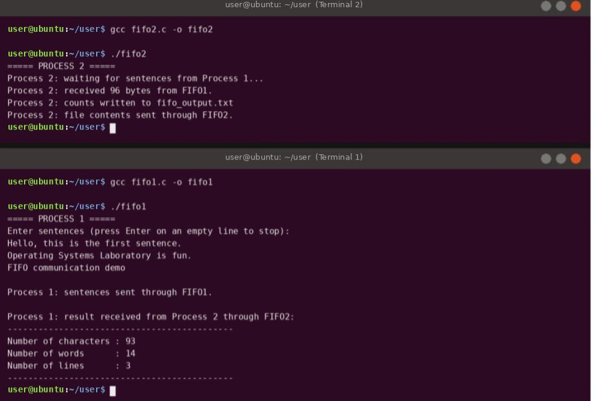

Practical 6
Full-Duplex Communication using FIFO
Theory
This practical uses named pipes (FIFOs) for inter-process communication (IPC) between two unrelated processes, with data flowing in both directions.
Key concepts
- IPC – the methods processes use to exchange data, such as pipes, FIFOs, message queues, shared memory and sockets.
- FIFO (named pipe) – a special file in the file system (here in
/tmp) that works as a first-in-first-out data channel. Unlike an ordinary pipe it has a name, so any two processes can open it – they do not need to be parent and child. mkfifo(path, mode)– creates the FIFO file.0666gives read and write permission to everyone.- Blocking open – opening a FIFO for reading blocks until another process opens it for writing, and vice versa. This synchronises the two processes.
- Full duplex – communication in both directions at the same time. A FIFO is one-way, so two FIFOs are used:
FIFO1(Process 1 → Process 2) andFIFO2(Process 2 → Process 1). - System calls –
open,read,writeandclosework on a FIFO just as on a normal file.
Flow of the program
- Process 1 reads several lines from the keyboard (an empty line stops input) and writes them into FIFO1.
- Process 2 reads the text from FIFO1, counts the characters, words and lines, saves the counts in a file (
fifo_output.txt) and sends the file contents back through FIFO2. - Process 1 reads the result from FIFO2 and displays it.
Run Process 2 in one terminal and Process 1 in another, as shown in the output.
Code
/* Practical 6 : FIFO full duplex communication - PROCESS 1 (sender / displayer) */
#include <stdio.h>
#include <stdlib.h>
#include <string.h>
#include <fcntl.h>
#include <unistd.h>
#include <sys/stat.h>
#include <sys/types.h>
#define FIFO1 "/tmp/fifo_one" /* Process 1 -> Process 2 */
#define FIFO2 "/tmp/fifo_two" /* Process 2 -> Process 1 */
int main(void) {
char text[4096] = "", line[512], buf[1024];
int fd, n;
mkfifo(FIFO1, 0666);
mkfifo(FIFO2, 0666);
printf("===== PROCESS 1 =====\n");
printf("Enter sentences (press Enter on an empty line to stop):\n");
while (fgets(line, sizeof line, stdin) && strcmp(line, "\n") != 0)
strcat(text, line);
fd = open(FIFO1, O_WRONLY);
write(fd, text, strlen(text));
close(fd);
printf("Process 1: sentences sent through FIFO1.\n");
fd = open(FIFO2, O_RDONLY);
printf("\nProcess 1: result received from Process 2 through FIFO2:\n");
printf("--------------------------------------------\n");
while ((n = read(fd, buf, sizeof buf - 1)) > 0) {
buf[n] = '\0';
printf("%s", buf);
}
printf("--------------------------------------------\n");
close(fd);
return 0;
}
Note: the uploaded PDF contains only the code for Process 1 (fifo1.c). The code for Process 2 (fifo2.c), which appears in the output screenshot, is not in the PDF, so it is not shown here.
Output

Tap or click the screenshot to open it full size.